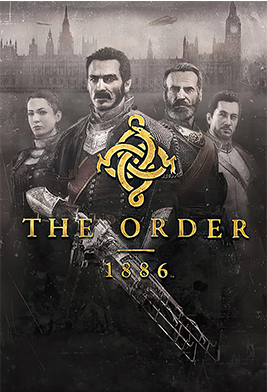

The Order 1886
The Order: 1886 é um game que tem um significado especial para mim. Foi o trailer dele que colocou uma ideia fixa na minha cabeça: “eu preciso de um PS4”. Mais tarde, assistindo às gameplays, tive a certeza de que o investimento valeria a pena. Isso porque o exclusivo da Sony consegue unir uma porção de elementos que me agradam e faz com que funcionem muito bem em conjunto.
O fascinante universo de Londres vitoriana e steampunk
O jogo se passa no período da Revolução Industrial em uma Londres vitoriana. No entanto, ele aborda os avanços tecnológicos e econômicos de uma forma bem diferente da realidade que conhecemos. É aqui que a narrativa recebe uma bela dosagem de ficção científica, terror e ação. O universo de The Order: 1886 funciona como uma fusão perfeita entre o filme Van Helsing e a série Penny Dreadful.
Neste cenário de ficção alternativa, encontramos diversos personagens bastante conhecidos da literatura e do mundo real:
- Nikola Tesla: É o cientista responsável pela construção das armas incríveis e dos itens tecnológicos do game.
- Jack Estripador: Vemos que alguns dos crimes bárbaros ocorridos na cidade são atribuídos a ele.
- Arthur Conan Doyle: O comissário de polícia chama-se Doyle e está sempre soltando um emblemático "Elementar".
Tudo isso somado a viagens de cavaleiros em zepelins e a caça a monstros em Londres tornam a ambientação do game, no mínimo, espetacular.
A história e os personagens de The Order: 1886
Logo que iniciamos a campanha, vemos que Londres passa por graves problemas políticos, refletidos nas manifestações das classes menos favorecidas. Além disso, há uma infestação de "mestiços" - humanos que se transformam em licantropos (lobisomens) - aterrorizando os distritos mais ricos do país.
Para combater essa ameaça, existe A Ordem, uma sociedade de cavaleiros militares descendente direta da Távola Redonda, criada pelo Rei Arthur séculos atrás. É neste contexto que controlamos Grayson, o terceiro homem a ocupar o cargo de Sir Galahad. No comando dele, passamos a conhecer a fundo essa sociedade, seus objetivos e as prerrogativas pelas quais lutam.
Os membros do esquadrão:
- Sir Percival (Sebastian Malory): Conselheiro e amigo de longa data de Galahad. É um dos poucos cavaleiros à sua altura em termos de força, habilidade e liderança.
- Lady Igraine (Isabeau D’Argyll): Aprendiz de Galahad, tornou-se extremamente habilidosa no campo de batalha e foi o membro mais jovem a adentrar na Ordem.
- Marquês de Lafayette: Recrutado por seu gênio tático refinado durante a Guerra da Independência Americana e a Revolução Francesa, é o aprendiz de Sir Percival.
Gráficos, gameplay e o fator replay: Vale a pena?
No quesito visual, The Order: 1886 é um show à parte e envelheceu incrivelmente bem no PlayStation 4. O game possui um arsenal incrível que te obriga a testar arma por arma, desde as tradicionais pistolas e rifles até os projetos de Tesla, como a TS-23 Arc Induction Lance (minha favorita), que descarrega choques elétricos fatais.
Na época do lançamento, o título recebeu muitas críticas severas referentes à sua curta duração. Particularmente, eu não concordo com a maioria delas; mesmo sendo um game 100% linear, a jornada me atendeu bastante.
Onde o jogo realmente peca, ao meu ver, é em não oferecer um fator replay. Por não ter um modo online, colecionáveis mais profundos ou caminhos alternativos em um New Game Plus, é uma experiência de "uma jogada só". Ainda assim, pela sua rica história e gráficos cinematográficos, é um jogo que todo fã de ação e ficção deveria conhecer.